Green keeps showing up in bathrooms for good reason, it feels calm without tipping into boring, brings a sense of nature indoors instantly, and works across almost any design style from rustic to sleek and modern.
Choosing the right shade matters more than most people expect going in. Light green opens up a smaller space, while a deeper tone adds real drama in a larger one.
A warmer green leans cozy and inviting, while a cooler green feels crisper and more contemporary, both work, just for different moods.
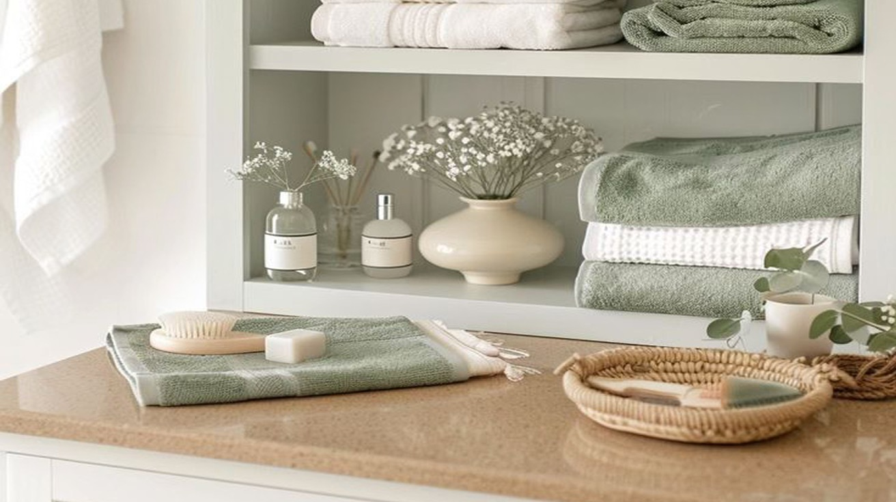
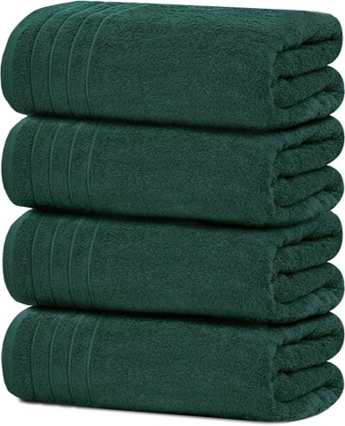
Tens Towels Extra Large Bath Towels, 30 x 60 Inch, Hunter Green, 4 Piece
Shop on AmazonWhy Green Works So Well in a Bathroom
Green sits in a rare spot among colors, calming enough for a space meant for unwinding, but with enough depth and variation to never feel flat or boring.
It also connects naturally to plants and natural materials, which makes a green bathroom feel more grounded and intentional than most other color choices manage.
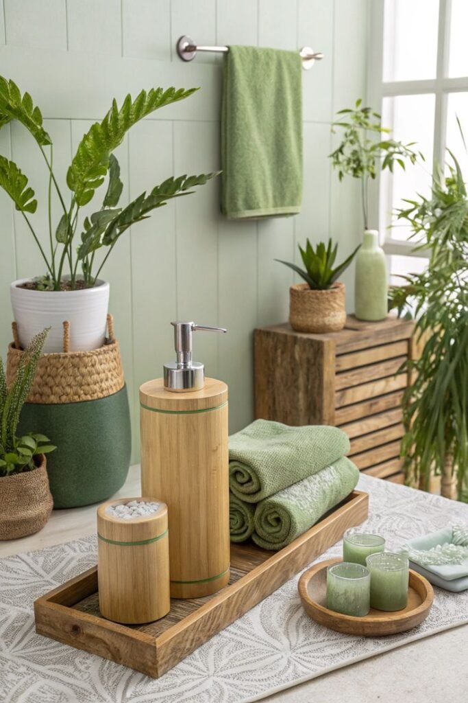
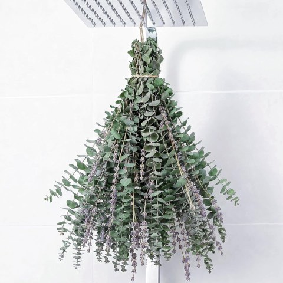
Preserved Eucalyptus and Lavender Shower Bundle, 52 Pcs, Real Dried Stems
Shop on Amazon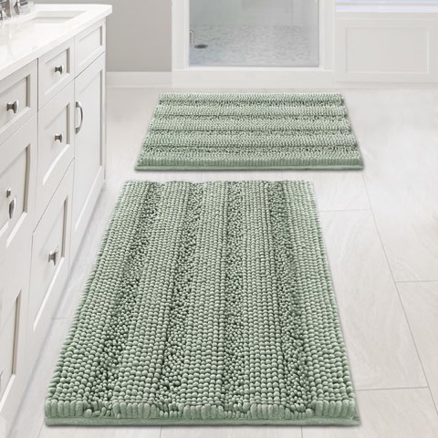
H.VERSAILTEX Sage Bathroom Rugs, Set of 2, Extra Thick Chenille Striped Shaggy
Shop on Amazon16 Green Bathroom Decor Ideas
1. Green Art and Personal Decor
Art personalizes a bathroom faster than almost anything else, and green-themed pieces tie the rest of the decor together without much extra effort.
Botanical illustrations, abstract green art, or straightforward nature photography all fit the theme naturally.
Keeping the frames simple lets the art complement the space rather than compete with it, the personality still comes through either way.
2. Green With Black Accents
Green and black together create real contrast and edge, landing as modern and confident in a way softer pairings simply do not.
Black works well on fixtures, mirror frames, and hardware, letting the green carry the rest of the room's color on its own.
Balancing the black with a lighter green keeps the combination from feeling too heavy, bold, but still controlled throughout.
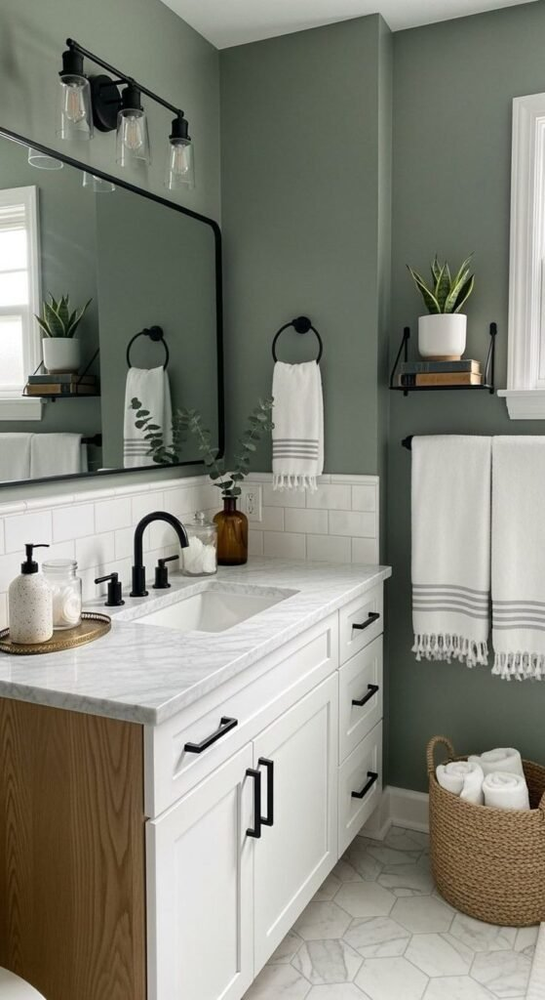
3. Green for Small Spaces
Small bathrooms genuinely benefit from green more than people expect, a light green shade opens up the space visually in a way white alone often cannot match.
A mirror amplifies the effect further still, bouncing both light and color around the tight footprint.
Light green walls, vertical storage, and minimal added decor keep a small bathroom feeling interesting without making it feel any more cramped.
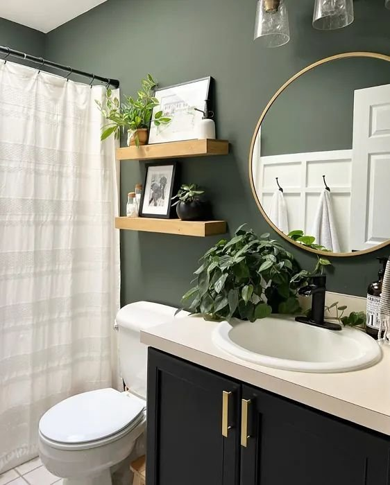
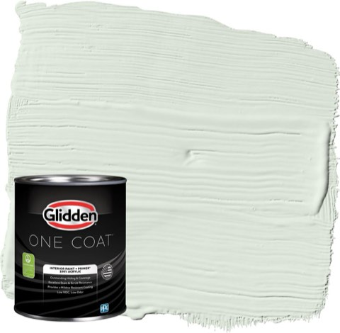
Glidden Interior Paint and Primer, Green Mint Wafer, One Coat, Eggshell, 1 Quart
Shop on Amazon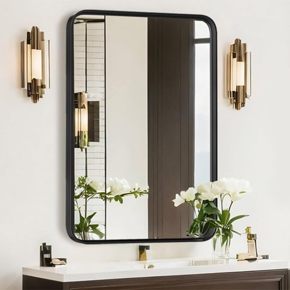
Bathroom Mirror for Wall, 30 x 22 Inch, Rectangle, Matte Black Metal Frame
Shop on Amazon4. Green Towels and Textiles
Textiles are one of the lowest-risk ways to bring green into a bathroom, towels, a bath mat, or a robe add both comfort and color at once.
A matching towel set, soft textures, and a muted green tone keep the look cohesive without committing to anything permanent.
This approach works especially well in an already-neutral bathroom, adding warmth without touching the walls or fixtures at all.
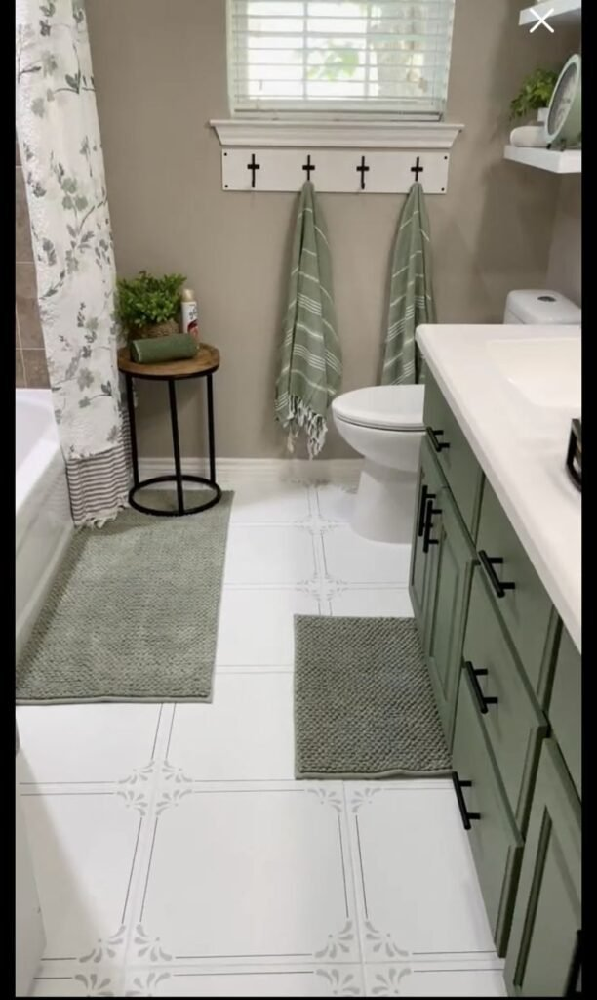
5. Lighting That Enhances Green
Lighting changes how green actually reads in a room more than almost any other factor, and bad lighting can undo otherwise good decor fast.
Warm bulbs soften a dark green, enhance any olive undertones, and avoid the harsh shadows that cooler bulbs tend to create.
Layering in sconces or a pendant alongside the main fixture lets green genuinely thrive instead of looking flat or muddy under a single overhead light.
6. Bold Green Wallpaper
Wallpaper intimidates a lot of people, but green wallpaper transforms a bathroom almost instantly once it is actually up on the walls.
A floral print, a palm leaf pattern, or an abstract green texture all read as intentional rather than overwhelming.
Keeping the rest of the decor simple lets the walls do the talking, sometimes the bold choice turns out to be the one that pays off most.
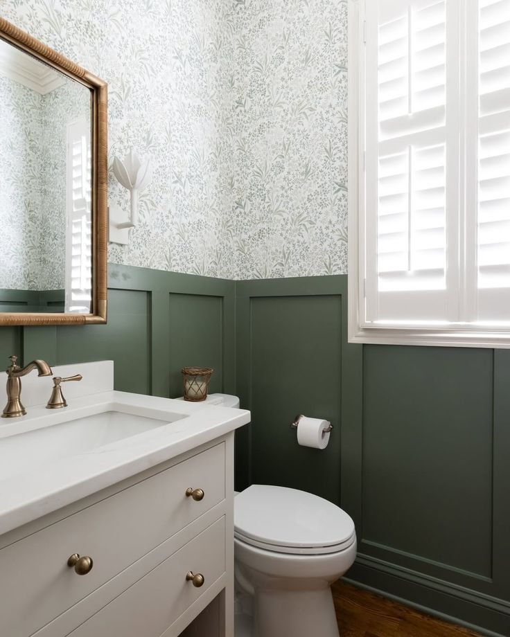
7. Green Paired With Wood
Green and wood feel genuinely natural together, adding warmth to a green bathroom without ever making it feel heavy.
A wood floating shelf, a wood-framed mirror, or a wood vanity cabinet all soften the green that surrounds them.
This combination works especially well in a modern or Scandinavian-style bathroom, where nature-inspired pairings tend to land best.
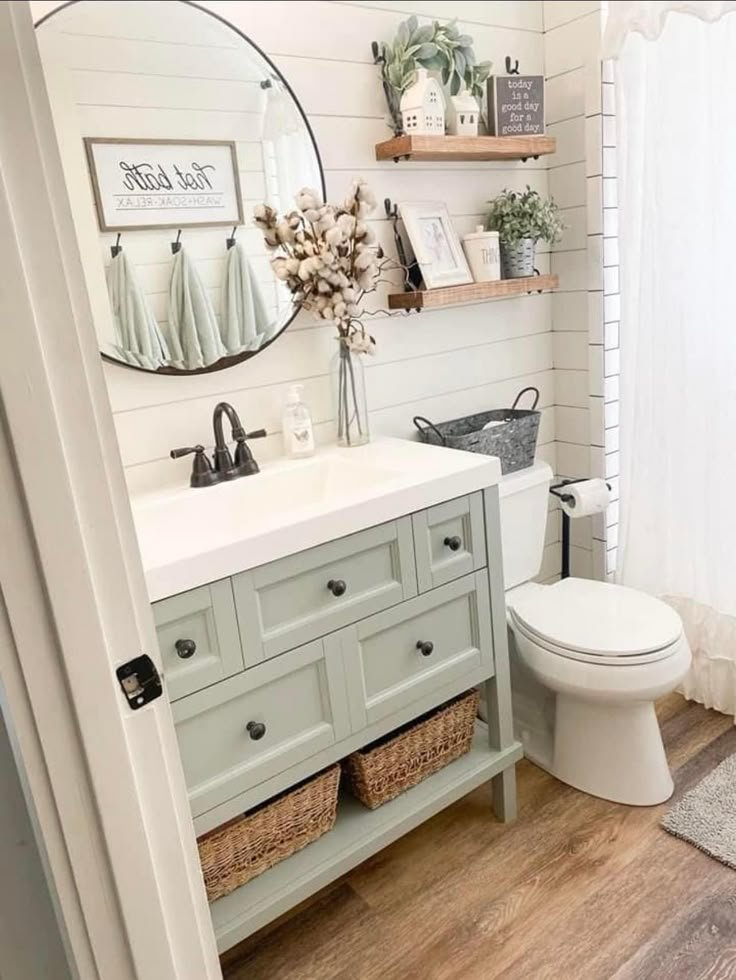
8. Green and White for a Fresh Look
Green and white together create a clean, classic combination that almost never misses, especially in a smaller bathroom that needs a bit more brightness.
White handles the tile, the fixtures, and the ceiling, while green takes the walls or a handful of accents around the room.
The contrast keeps the whole space feeling crisp and balanced, proof that the simplest color pairing is often the strongest one available.
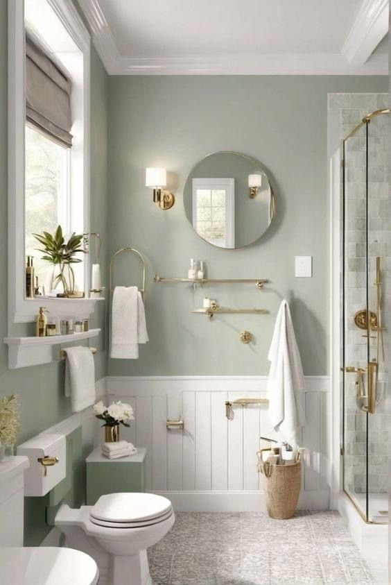
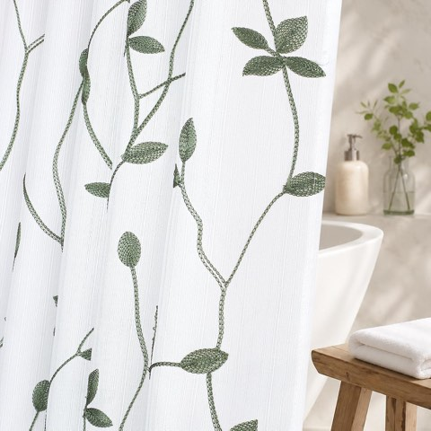
Embroidered Leaf Farmhouse Shower Curtain, Faux Linen, 72 x 72 Inch, White Sage Green
Shop on Amazon9. Green and Gold for Real Luxury
Green and gold together simply reads as expensive.
Gold hardware against a green vanity turns an ordinary morning routine into something that feels noticeably more elevated.
This combination works best with dark green walls, soft lighting, and minimal surrounding clutter to let the pairing actually shine through.
Gold warms up green in a way that adds real elegance, it is about the closest thing to bringing hotel-bathroom energy home.
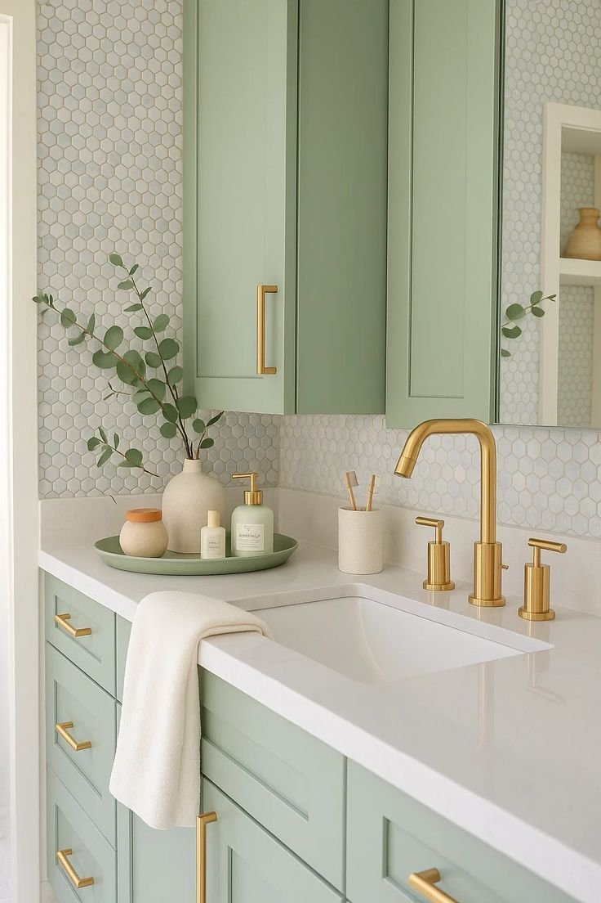
10. Green Accessories That Tie the Room Together
Small details do more work than people give them credit for.
Green accessories reinforce the theme quietly, without ever shouting for attention.
A soap dispenser, a toothbrush holder, and a storage tray in a consistent green shade build cohesion across the whole counter.
Sticking to one shade of green across these smaller pieces matters, too many different greens together starts to feel messy rather than intentional.
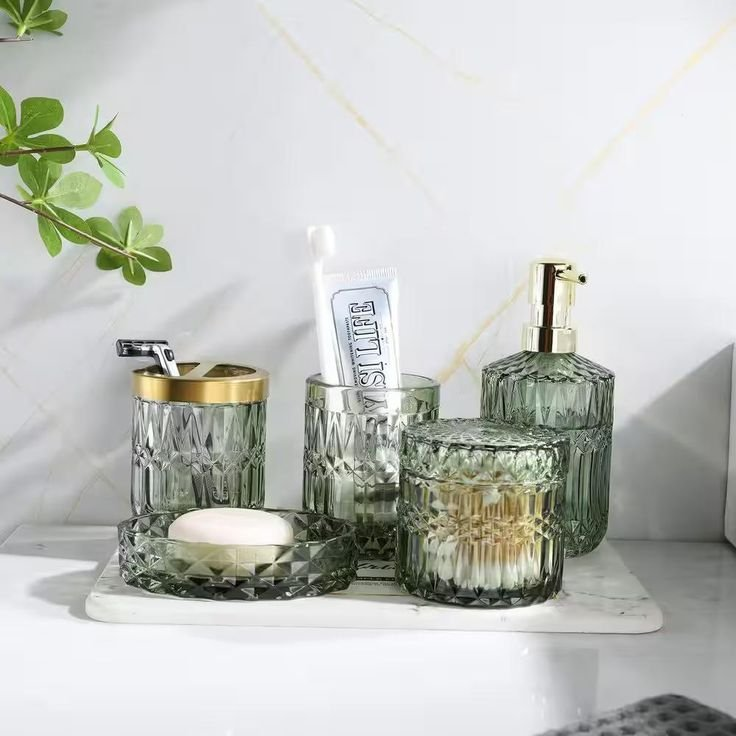
11. A Green Shower Curtain
For anyone not ready to commit to paint or tile, a green shower curtain shifts the whole room's vibe with zero permanent change required.
A muted sage pattern, a botanical print, or a solid emerald tone all deliver real impact for very little effort or cost.
Pairing it with neutral towels keeps the look from feeling overloaded, a simple swap that genuinely changes the mood of the room.
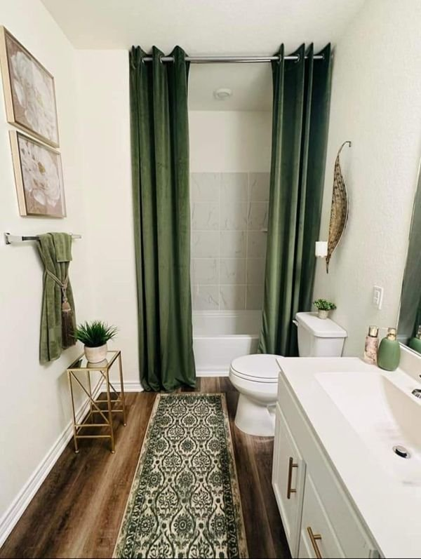
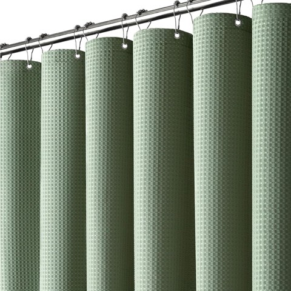
Dynamene Waffle Shower Curtain, 72 x 72 Inch, Sage Green, Heavy Duty Fabric
Shop on Amazon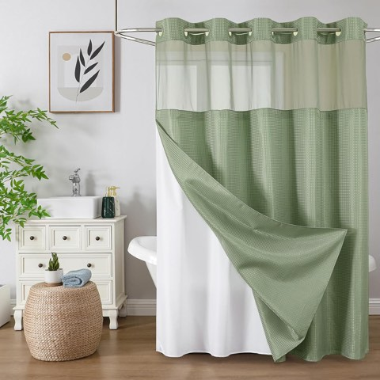
Colorful Star Sage Green No Hook Waffle Shower Curtain Set, 72 x 75 Inch
Shop on Amazon12. Plants That Actually Thrive There
Plants and bathrooms genuinely belong together, the humidity most bathrooms naturally have helps a lot of common houseplants thrive without extra effort.
Pothos, snake plants, and ferns all tolerate bathroom conditions especially well, and a little humidity goes a long way toward keeping them healthy.
Placed on a shelf, the counter, or in a hanging planter, green-on-green consistently works, it is genuinely hard to find a bathroom that looks worse once plants get added.
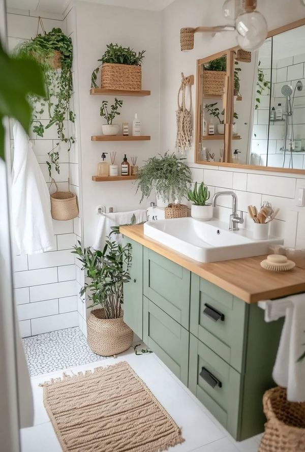
13. A Green Vanity
A green vanity grounds the whole bathroom and acts as a focal point without overwhelming everything around it, a strong option for anyone who wants color without repainting a single wall.
White countertops, gold or black hardware, and neutral flooring all pair naturally with it.
It reads as bold but balanced, and it genuinely hides wear better than a plain white vanity does over time.
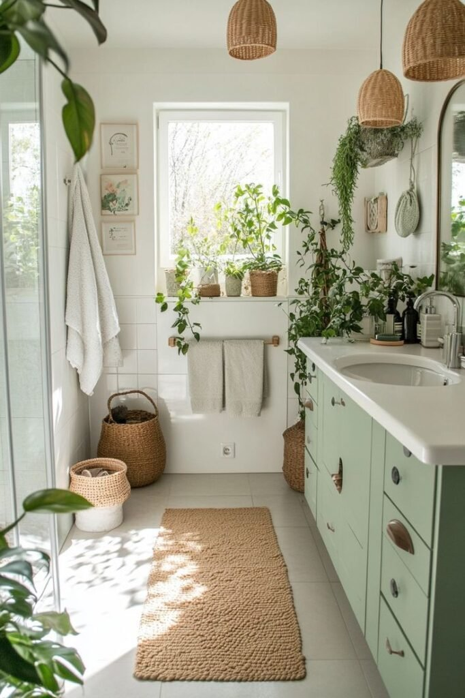
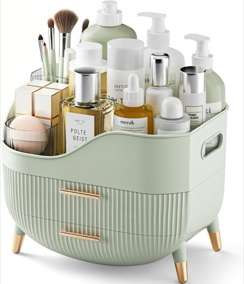
Pajiriona Makeup Organizer with Drawers, Green Skincare Organizer for Vanity
Shop on Amazon14. Green Tile
Green tile reads as rich and intentional the moment it goes in, and it elevates a bathroom almost instantly compared to a standard white tile job.
Glossy subway tile, zellige tile, and matte ceramic all bring something slightly different to the look, glossy catches light, matte adds depth.
Used in the shower, as a backsplash, or across a full wall, green tile adds visual richness without actually adding any clutter.
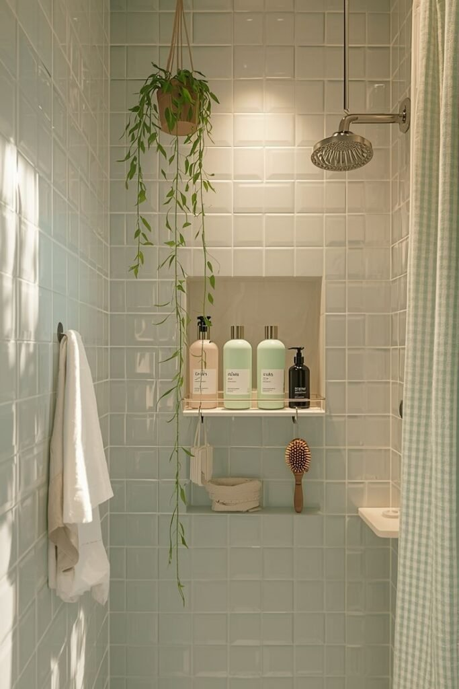
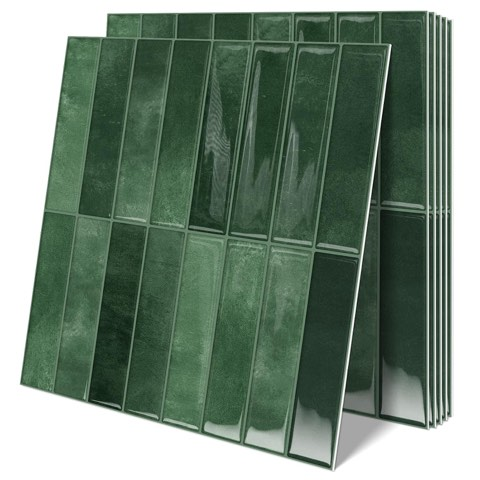
Peel and Stick Subway Tile Backsplash, 10 Sheets, Thicker Design, Green
Shop on Amazon15. A Deep Green Accent Wall
A single deep green wall adds real character without overwhelming the whole room.
Placed behind the vanity or the tub, it changes the entire feel of the space.
Forest green, emerald, and hunter green all work, as long as the rest of the room stays lighter to balance out the depth of color.
White sinks and mirrors keep the space grounded against the boldness, a bathroom is allowed to feel a little dramatic too.
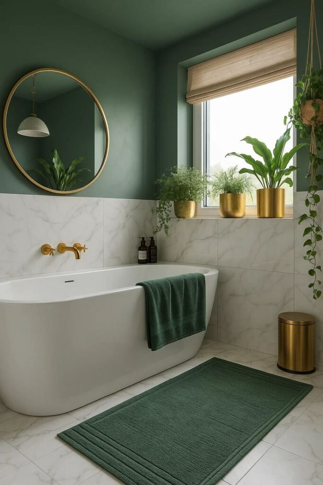


16. Sage Green Walls
Sage dominates green bathroom decor for a reason, it reads as calm and timeless, and it is remarkably forgiving to live with day to day.
It pairs beautifully with white tile, a wood vanity, or brass fixtures, and it works equally well for renters and homeowners since it is rarely a hard sell to the next buyer.
The shade hides small imperfections and never feels loud, which makes it one of the easiest wins on this entire list.
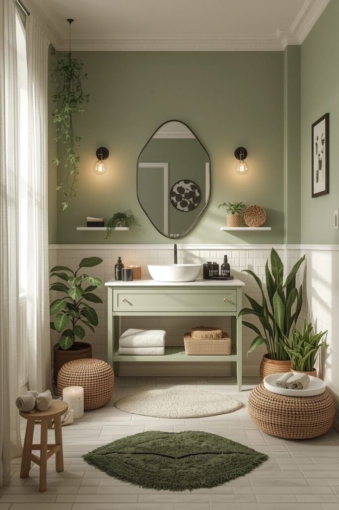

Final Thoughts
Green bathroom decor delivers because it is genuinely flexible, calm and forgiving in a light sage, dramatic and bold in a deep forest tone, and everything in between depending on how it is used.
None of these sixteen ideas require doing everything at once.
Picking one or two that fit the space already there is enough to notice a real difference the next time that door closes behind someone.